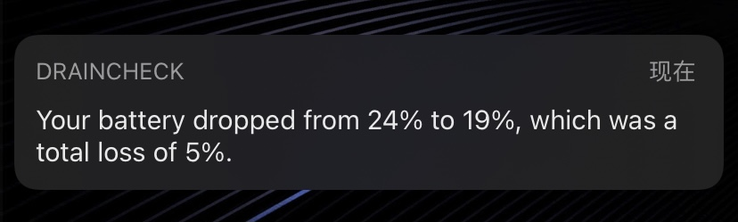

-
Turn DND mode into a battery monitoring system. This tweak records the battery percentage when DND is enabled, then tells you how much you've lost when DND is disabled. This is a good way to keep track of how much battery percent you lose overnight.

In this version
-
1.0.2
- Add an icon to the notification.
- Show the times of when the battery analysis initiated and ended in the notification.
Previous updates
-
1.0.1
- Remove debug logging code.
- Fix the notification displaying negative numbers if you gained instead of lost battery percent.
-
1.0.0
- Initial release.
Known Issues
- No current issues.